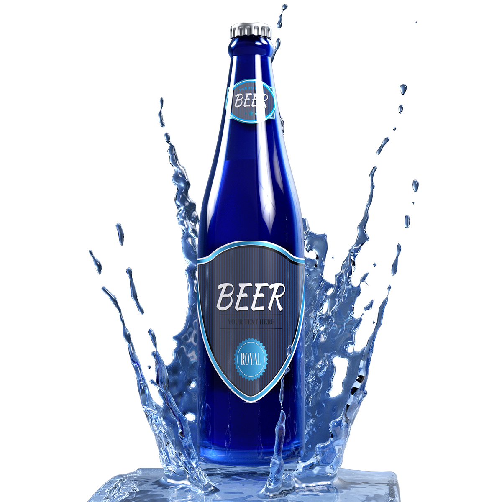

<ng-container *ngIf="(item | async) as beer">
  <ion-header class="header">
    <ion-icon
      name="chevron-back-outline"
      class="back-btn"
      [routerLink]="['']"
    ></ion-icon>
    <ion-title> {{beer.name}} </ion-title>
    <ion-icon
      *ngIf="!darkMode"
      name="moon-sharp"
      class="header-icon-btn"
      (click)="toggleDarkMode()"
    ></ion-icon>
    <ion-icon
      *ngIf="darkMode"
      name="sunny"
      class="header-icon-btn"
      (click)="toggleDarkMode()"
    ></ion-icon>
  </ion-header>

  <ion-content>
    <div class="banner-section">
      
      <div class="beer-desc-wrapper">
        <ion-title class="title">{{beer.name}}</ion-title>
        <ion-text class="tagline-text">{{beer.tagline}}</ion-text>
      </div>
      <div class="feedback-btns-wrapper">
        <ion-icon
          name="thumbs-down-outline"
          class="feedback-btn"
        ></ion-icon>
        <ion-icon
          name="heart-outline"
          class="feedback-btn"
        ></ion-icon>
      </div>
    </div>
    <div class="beer-contents-section">
      
      <ion-text class="beer-description">{{beer.description}}</ion-text>
    </div>
  </ion-content>
</ng-container>
